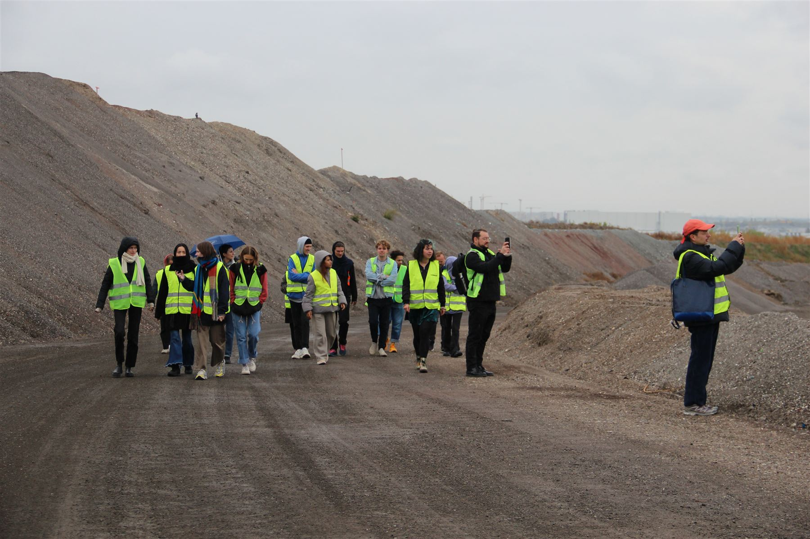
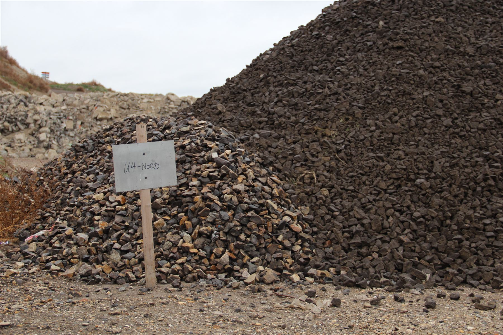
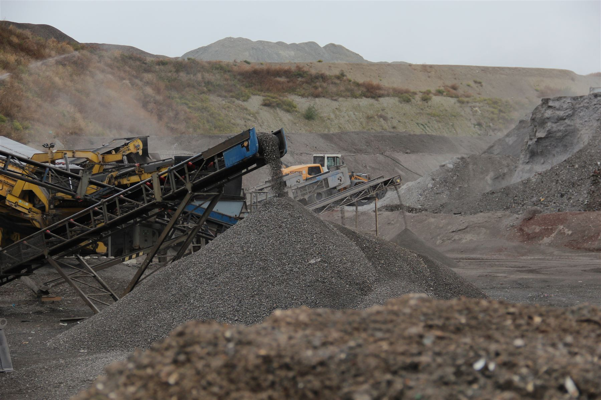
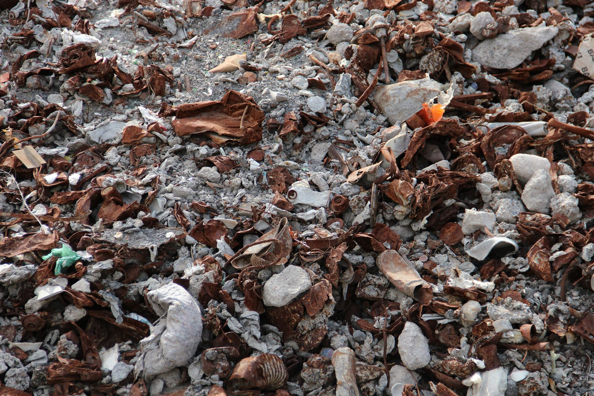
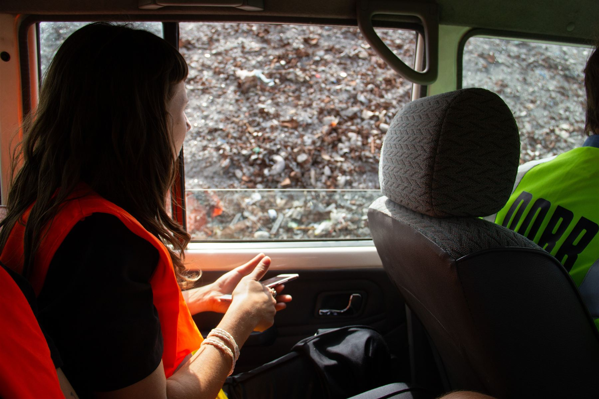
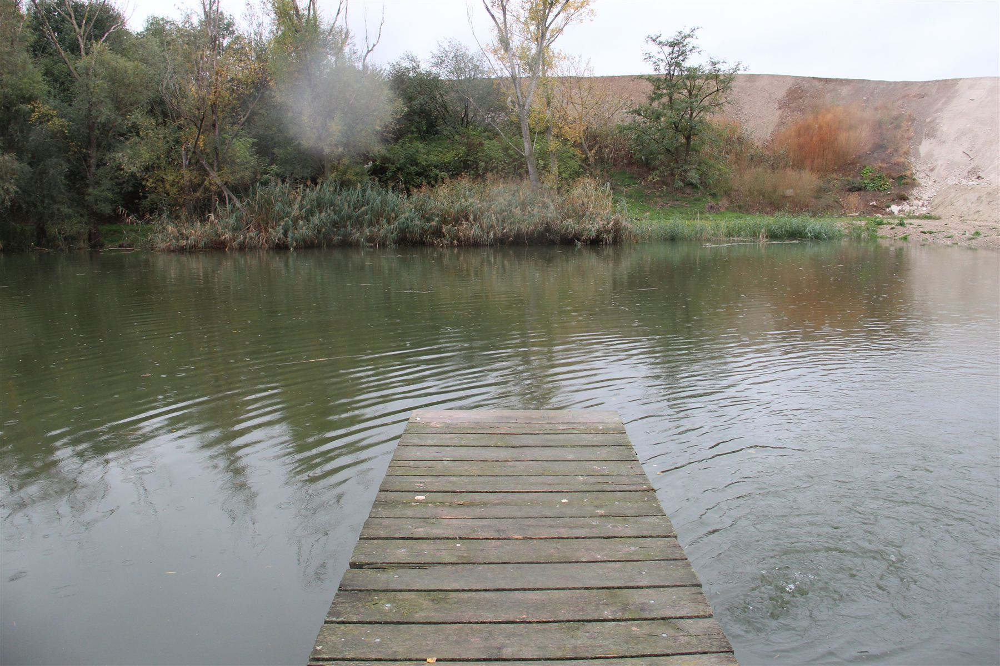
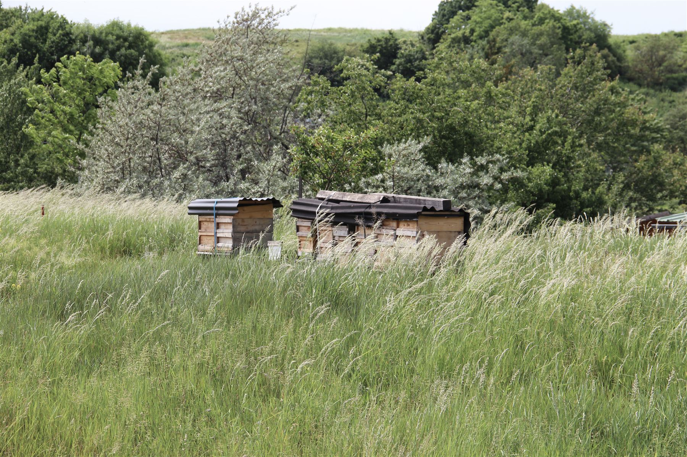
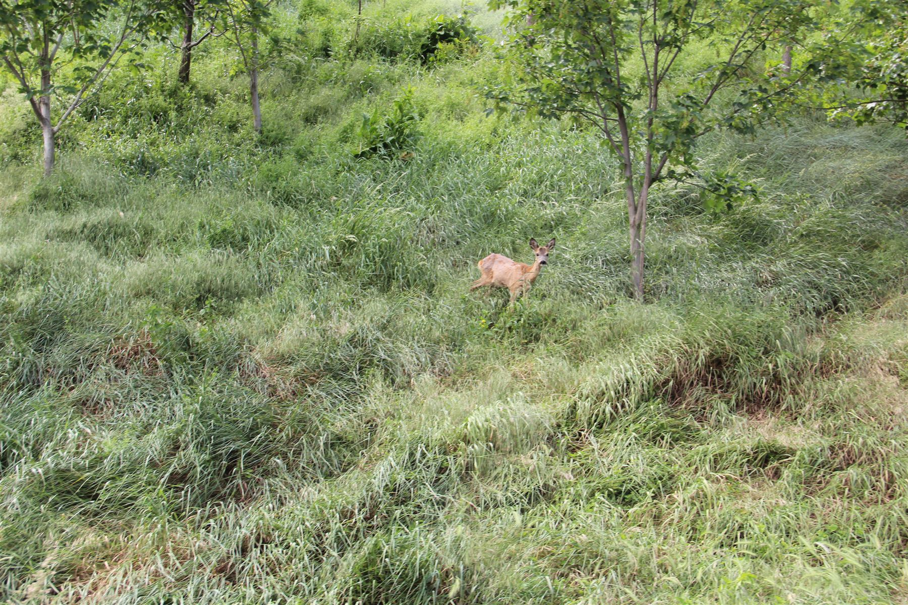

I’m a Vienna-based designer and researcher. I work across visual communication, illustration and design research, asking how spaces, systems, and materials can work better for people and places. Alongside my design work, I occasionally write.
Disposable Futures







